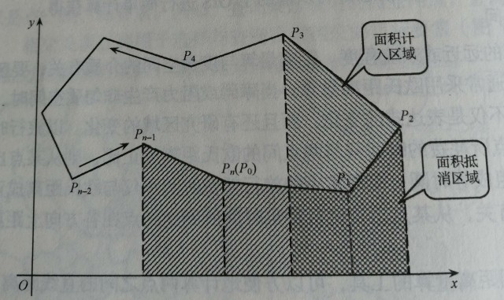
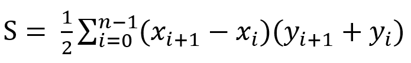
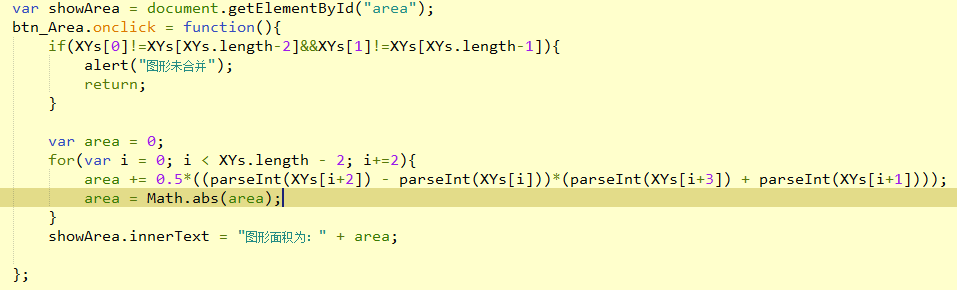

⚓基于空间二维坐标的多边形面积计算
2019年03月03日 10:50:271. 概念
在矢量结构下，面状地物以轮廓边界弧段构成的多边形面积表示。
梯形法是多边形面积量算的主要方法之一。
其基本思想是：在平面直角坐标系中，按多边形顶点顺序依次求出多边形所有边与x轴（或y轴）组成的梯形面积，然后求其代数和，多边形边界与坐标轴组成的多边形外部梯形部分的面积将由计算的正负差值抵消，最后剩下多边形内部梯形部分面积。

对于没有空洞的简单多边形，假设有N个顶点，其中S为多边形面积，(x,y)为多边形顶点坐标。其面积计算公式为：

2. 公式应用
点击下方按钮显示的内容为本人运用JavaScript脚本编写的应用，以展示通过上图公式在实际中的应用，相关详细代码可通过浏览器控制台查看或在后文中简单讲述。
面积量算
3. 代码思想

在上图代码中，图形的点集通过数组对象进行存储，具体形式为[x1 , y1 , x2 , y2 ,..., xn , yn]。
可待改进...